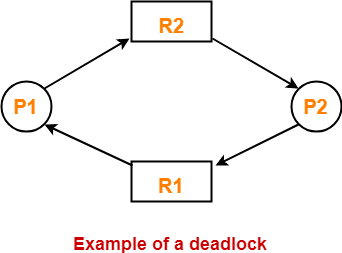

Theory
In Multitasking Operating system multiple processes can be executed simultaneously and it has ability to preempt the currently running process. In order to execute multiple processes parallelly, OS should provide mechanism for Inter Process Communication(IPC).
Lack of synchronization in IPC causes the problems like Inconsistency, Data loss, Deadlock.
Why these synchronization problems really occur?
They occur because of --
-
Critical Section: Critical section is that part of the program where shared resources are accessed and non-critical section is that part of the program which does not access any shared resource. Program may have series of critical and non-critical sections.
-
Race Condition: Processes must be racing to access the Critical section and the end result will depend on the order in which the processes finish their updates.
-
Preemption: Running process will be suspended/preempted and another process will be scheduled on CPU.
Deadlock -- waiting forever
DeadLock is a situation where a process is waiting for getting access to a resource which is already allocated to some other process and that other process is waiting for resource whose access is held by first process. At this situation both the processes will prevent each other from getting access to the resource they want hence resulting in a deadlock where none of the process can complete execution.
Consider P1 and P2 are two processes. P1 requests for resource R1 and acquires it, P2 request for resource R2 and acquires it.
For further execution P1 need resource R2 for execution and P2 need resource R1 for execution.

At such a situation, both the processes will wait until resource is set free. They will remain in wait state for ever and hence leading to a deadlock.
To proceed, operating system won't understand what action to take. Only way is to abort or stop one or more processes which will release the resource, which results in complete the execution of remaining processes releasing all the resources so that the first process can complete its execution.
Necessary Conditions:
Following four conditions will hold if deadlock is there:
-
Mutual Exclusion: Resources are non-sharable. At a time only one process can use resource.
-
Hold and Wait: Process holds a at least one resource and waits for a resource held by another process.
-
Non Preemption: Process does not release the resource.
-
Circular Wait: A set of processes are waiting for a resource held by each other in circular form.
These 4 conditions taken together constitute necessary and sufficient conditions for deadlock
Strategies of handling deadlock
-
Deadlock Avoidance and prevention: Do not let the system go in deadlock. [Popular algo is Banker's Algo.]
-
Detection and Recovery: Let deadlock occur, then do preemption or abort the processes to handle it if occurred. [Doctor's Algorithm]
-
Deadlock Ignorance: If deadlock is very rare, then let it happen and reboot the system if it occurs. This is the approach used in today's operating systems like Windows and Linux. [Ostrich Algorithm].
Dining Philosopher Porblem
Dinning Philosopher problem is an example that is normally considered when considering about deadlock. The problem is
about 5 philosophers. The 5 philosophers are seated around a circular table. Each of the philosopher is given with one
chopstick. The mandatory condition is that philosophers can eat only if they has 2 chopstick. There are 3 states:
- Thinking
- Hungry
- Eating
Initially all philosophers are thinking. When a philosopher is hungry then he will pick the chopsticks from his left
and right of which one is his chopstick and other from neighboring philosopher and starts eating. Now the philosopher
whose chopstick was taken has to wait till he receives back his chopstick and also get chopstick from the other side
before he starts eating. If all philosopher wants to eat at same time then all of them will have their chopstick and
they will be waiting for the second chopstick. They will remain in that state for ever. This is the deadlock because no
one can complete the task of having food and will be forever waiting to get second chopstick. In-order to solve this
problem semaphores (variable which is used to solve critical section problem) or monitors can be used.
Solution to DeadLock in Dinner Philosopher problem
- Philosopher must pick chopstick only if both left and right chopstick are available.
- Only make four Philosophers to sit in circular table such that there will be one chopstick left on table. In
this way deadlock can be avoided.
Reference Material:
-
http://www.cs.rpi.edu/academics/courses/fall04/os/c10/
-
https://www.shsu.edu/~csc_tjm/cs431/Chap08TJM.html
- Operating System Concepts - by Silberschatz, Galvin, Gagne